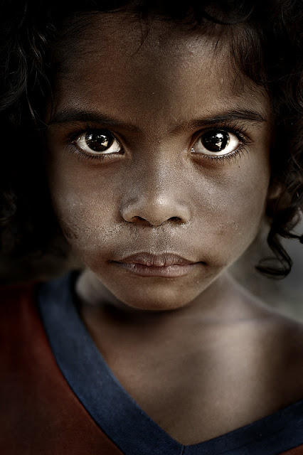
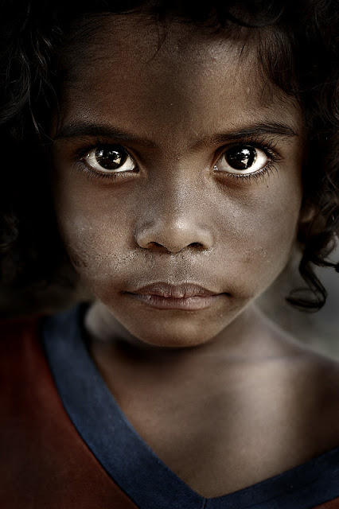
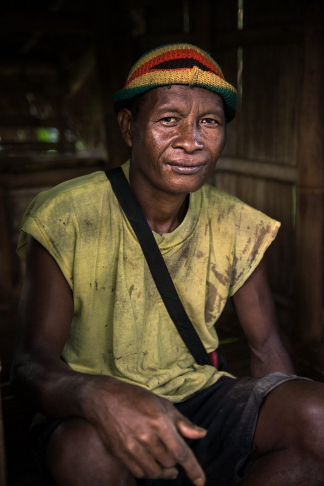
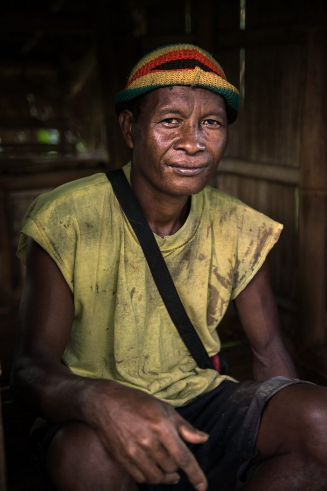

Various indigenous people dwelling in the highlands of northern Luzon, including the Bontoc, Ibaloy, Ifugao, Apayao/Isneg, Kalinga, and Tinggians, are generally referred to as "Igorot", derived from the Spanish term “Ygollotes”, which means "mountain people". In the early 21st century, their number is projected to be around 1.5 million. Igorots are Austronesians, which explains why they speak a language that is part of the subgroup of Philippine languages that are Austronesian and is spoken in northern Luzon. They have a history for starting wars and headhunting practices. Currently, there are two main groups of Igorots: the higher country people, which include the Nabaloi or Ibaloi, Kankanay (Kankanai), Lepanto or northern Kankanay, Bontoc (Bontok), southern Kalinga, and Tinggian, who grow wet rice as their main cultivation in step-like terraces on mountain sides. And the second group, which consists of the Gaddang, northern Kalinga, and Isneg or Apayao, that are sparsely populated in hamlets or farmsteads. Igorots practice gold-mining, slash-and-burn farming, and growing vegetables as their main sources of livelihood.
Although many people find their cultural practices, such as headhunting, strange and barbaric, these activities have a history that may help us understand them better. Here is a fact, though: they are not carried out at random. In the Cordilleras, headhunting was carried out for a variety of reasons, including crimes, rivalries, betrayals, and as a sacrifice for people's desire for success and prosperity. Retaliation becomes a matter of honor for the tribe and the person, and a vendetta is proclaimed. They use a battle-axe to hack off the heads, and during battles, if a warrior doesn't have the chance to behead anybody, he is allowed to cut off the head from a dead body and is then eligible for the distinctive "Chaklag" headtaker tattoo.
Additionally, they have artistic and musical talents, especially in the areas of woodcarving and basket weaving, and they make a living by using these skills. They frequently create music using materials found in their environment, such as bamboos. To compose rich and wonderful musical compositions, they use instruments such as the tongatong, which is composed of bamboo sticks, the gangsa gongs, a percussion instrument, and the bamboo nose flute or kaleleng. The Hudhud chants of Ifugao that consists of narrative chants were engraved by UNESCO on the Representative List of the Intangible Cultural Heritage of Humanity. Women also handcraft wooden spoons with human figures, rice bowls, and baskets. The Igorots weave their clothing using plants like bejuco as to be strong and resistant under ordinary conditions. Women wear tapis, which is essentially a hand-woven piece of fabric with colorful horizontal stripes wrapped around the waist, and men wear bahag, or loincloth.
Igorot people were primarily animistic and ancestral worshipers. Like other ethnic groups, the Igorots are also have complex rituals and celebrations. Igorots leave for a few days to socialize, take care of relationship, and relax with a drink of palm liquor called bayah. They believed that their gods were the ultimate source of blessings, and they either bring fate or misfortune to them, which is why they perform rituals to please the gods. The Mambunong, the tribal leader, not only manages social issues, but also performs religious functions. These rituals usually involve offering and sacrificing animals. Despite their resistance to the Spanish beliefs, traditions, and cultures, they were still exposed later on and some of their practices gradually ceased.
.jpg) 

While they’re nomadic, they are able to build temporary houses made of sticks and bamboo leaves. And they are still among the most skilled in jungle survival. The Aetas practiced slash and burn agriculture for many generations. They mainly produce root crops, bananas, and a variety of vegetables. Rice is not planted extensively and is usually bought to supplement their insufficient stores. Planting starts in May when the rains come since the bounty of produce depends on adequate rain since there is no irrigation system compared to the Igorots, and on vigilant protection from rats and other wild animals. In Aeta society, the family is the main social unit, however widows and widowers receive special attention. They appear to have equal rights and responsibilities as a couple, and their relationship appears to be pleasant. Parents and children have a solid relationship, and children are valued. A young man aged 20 and a young woman aged 16, can get married. All grooms must pay a bride-price in the form of a "arrow-bow bolo," "cloth", or "homemade firearm" in addition to money. By donating a piece of their bandi to the girl's family, the boy's family arranges for him to marry her.
As for their clothing, they wear plain and simple attire. Aetas, who are skilled in weaving and plating, wear wrap around skirts or bark cloth for women, and loin cloths for men. They are also into music and the arts and they make use of ornaments as accessories and have ensembles of instruments to create melodious rhythms. The Aeta have a talent in weaving and plaiting. Handicrafts are made to meet the everyday necessities of the community, as well as for personal decoration and exchange with outsiders. The Pinatubo Aeta are known for their mastery of metalwork, making it their most highly skilled vocation. The jewelries that they wear to symbolize their beliefs are also handcrafted using the resources available in their environment. Their approach to basketmaking is unique in that they always start with an old basket and use it as a mold to create a new one. This simple one-over-one construction has been used by the Aeta of northern Luzon to weave double-walled baskets made of banban
Aetas are mostly monotheistic or animistic. They also believe in environmental spirits wherein there are good or bad spirits in every area such as anito and kamana. Aetas believe that evil spirits are the usual cause of illness. They still practice a ritual called kagon, a form of spirit healing performed with dance, song, and guitar music to exorcise the dimonyo from ailing individuals. They also have a strong belief in the spirits of health and well-being which explains why their prayers mostly consist of healing and their spirituality is best manifested in their concept of health and disease. They also believe in the heavenly god, and they call him Apo Diyos. It is customary to wear a necklace of stringed pieces of sticks to ward off bad spirits like lamang-lupa, inhabitants of the earth believed to enter the body and cause disease.
.jpg)
Historically, tattooing used to be a widespread practice and the prevalence of "skin-painting" led early Spanish chroniclers to describe the Visayans as "Pintados". The tattoos are called batek, and they are pricked into the skin with a needle or any pointed iron instrument dipped in an ink made from the juice of the ripe fruit of the vine langi'ngi.The Panay Bukidnon are also known for a tradition, which is no longer practiced today, of creating well-kept maidens called Binukots starting at a young age. Traditionally, the Binukot is isolated by her parents from the rest of the household at 3 or 4 years of age. She is not exposed to the sun, not allowed to work, and is even accompanied by her parents when she takes a bath. This results in a fair, frail, fine-complexioned and long-haired woman. As she stays at home most of the time, her parents and grandparents entertain her with various oral lores and traditional dances. This makes the Binukot excellent epic chanters and repositories of their history. No man actually would dare to look at a Binukot as there was a threat of punishment by death to anyone who would violate her by looking. Today, the practice no longer happens. Still present today in Panay Bukidnon culture is the Suguidanon or the telling of a story through chanting an epic narrative in a particular tone and timbre. The tribe has 10 epics that contain details of heroic deeds and significant events relevant to their culture. Traditionally, these epics are sung as lullabies to children at bedtime, while waiting for time to pass or during special gatherings.
The Panay Bukidnon are known for their detailed embroidery and for their epic chants which depict stories from their history as a people. Still present today in Panay Bukidnon culture is the Suguidanon or the telling of a story through chanting an epic narrative in a particular tone and timbre. The tribe has 10 epics that contain details of heroic deeds and significant events relevant to their culture. Traditionally, these epics are sung as lullabies to children at bedtime, while waiting for time to pass or during special gatherings. They were memorized by the tribe, especially by the Binukots of the community. Today, most of the epics have been recorded and transcribed by historians and the elders of the tribe. Apart from this mystic practice, the Panay Bukidnon are known for their panubok embroidery, which is steeped in symbolism; for the Sugidanon epic, one of the longest epics in the Philippines, which takes more than 20 days of continuous chanting; and for the binanog dance, a ceremonial ritual dance that mimicks the flight of an eagle.
The most striking feature of Panay Bukidnon culture is the persistence of ceremonies in every facet of life. These ceremonies are associated with the belief that the relationships between the living and the spirits of the dead continue, and that environmental spirits have influence over daily affairs. The world is not only inhabited by humans, but also by deities and ancestors who inhabit the upper layer of the world above us, the langitnon, and the world below called idalmunon. They believe in an hierarchy of good and evil spirits called diwata with whom communication is held through the mediation of the baylan or medium. Sacrifices are given to the spirits for their good graces. Because of the importance of connecting to the unseen world to communicate with deceased ancestors, ceremonies and rituals play an important role in day-to-day life for interacting with the unseen world. Traditional beliefs are changing, however, as many Panay Bukidnon have converted to Christianity.
.jpg) 

The Ati have been using herbal medicine since the time they were pure nomadic hunters and gatherers. Overtime, their herbal medicine practices have also taken the form of talismans and amulets which aid in the protection from different spirits. Wild animals such birds, deer, pigs, turtles, monitor lizards and wild cats were traditionally caught using dogs, bows and arrows, although today airguns are more used. However, because of deforestation and a more sedentary lifestyle it is becoming harder to hunt and find these animals. They still prefer wild meat and they still eat it whenever they can to keep a strong body.
In Aklan province, many Ati men work as laborers around the tourism industry of Boracay. Ati women will often generate additional income by making handicrafts, working as house help or raising animals to sell. "Though we be Negritos, of the black race, here were we born. Our worth is as of diamond, most precious diamond … we precede the Bisayans, as we did the Spaniards”. An impromptu Pagabuhitan dance, a traditional livelihood dance done by the Atis.
Because the Atis were historically nomadic they do not have as many rituals or customary dances like other tribes in the Philippines. This Ati community adopted Christianity in the 1950’s when an American missionary came to their area. Today, many Ati communities have adopted western religions such as Baptist and Pentecostal but still practice many of their traditional animistic beliefs and rituals carried down from their ancestors. The origin of the popular Ati-Atihan festival in Kalibo was a non-religious celebration by the Atis in thanksgiving for gifts they had been given by lowlanders. Today, the festival is celebrated as a religious festival.
.jpg)
Over the years, the Lumad have nurtured and protected their traditional ancestral lands, and their individual cultures. Lumad culture is rich and diverse, with a wide range of languages, chants, rituals, dances, and other traditions. They are slash-and-burn farmers who fish, hunt, gather, and practice little trade. The Lumad people who reside within the southern highland ranges are swidden farmers and exercise little trade. Like many of its neighbors, the Bagobo community is ruled by a class of warriors known as magani or bagani. The elaborate dress and personal adornment of Bagobos are famous among anthropologists. The Mandaya, Agusan Manobo, and Ata share various cultural traits and social institutions like clothing and religious rituals. They exercise slash-and-burn farming and trade with neighbors. Warriors, commanded by the datu, are greatly valued and respected.
The T’boli and Teduray are also acknowledged for their baskets, trinkets, bracelets, and earrings created of brass. The T’boli’s t’nalak are prized fabrics deemed to be inspired by the dreams of the woman weavers. The Lumad tribe is commonly known for tribal music produced by musical instruments they made. Most of their musical heritage consists of various types of Agung ensembles – ensembles composed of large hanging, suspended, or held, bossed/knobbed gongs that act as a drone without any accompanying melodic instrument.
Lumads still prefer to live a traditional life. They are non-Muslim or non-Christian; instead, they believe in spirits and gods. There is a god for land, water, and for the harvest, to name a few, and they also believe that the mountain is sacred. They also believe that death and illness or bad faith are God’s way of showing anger. The offering of live animals such as pigs and chicken are common during tribal ceremonies for them to have a good harvest, health and protection, and thanksgiving
.jpg)
They faithfully practice five religious duties. These are the declaration of their sacred creed, their prayers, Sakah, Fasting during Ramadan, and making the pilgrimage to Mecca.When it comes to clothing, women are required to wear long sleeves. The neck of their coat-like blouse should also be cut high and closed. They also wear a sarong as their skirt. It is wrapped around the body and tucked in the waist. The Moro, as is the case with Muslims across the world, practice a mixture of Shariah (sacred Islamic law) and adalat(customary pre-Islamic traditions). Filipino Muslims hold common beliefs with their animist and Christian neighbors that appear to contradict Islamic teachings.
Today, mass-produced clothing has displaced traditional homemade Moro textiles. Among the Maguindanao, special lullabies (sangel) are sung for either male or female children. The Sama aemboaembo lullaby is sung by the mother while rocking the baby between the mother's raised feet. At the end of the song, the mother's legs are straightened, and the baby slides into the mother's lap. The principle musical instrument of the Moro is the kulintang, a set of graduated gongs laid in a row in a wooden frame. Other gong instruments include the agung, a large, deep-rimmed gong; the gandingan, gongs with narrower rims that are played in pairs, and the babandil, a gong with a narrower, turned-in rim. In addition, a drum called the dabakan often accompanies gongs. In Lanao del Sur province on Mindanao the Maranao people play deep-rimmed gongs called pumalsan and the penanggisa-an, and the Tausug people on the island Jolo play a pair of hanging gongs called duwahan.
They carry along with them their very own traditions and cultures. The Moro culture is greatly influenced by Islam. They faithfully practice five religious duties. These are the declaration of their sacred creed, their prayers, Sakah, Fasting during Ramadan, and making the pilgrimage to Mecca.They also believe the Koran to be the absolute word of God. This is then preached by Mohammed to his fellowmen. They are not allowed to eat meat unless the animal was killed following their religious practices. They also use a lot of coconut in their cooking. Most Moro holidays are Islamic, and their date is determined by the lunar calendar, thus the days of celebration fall on different dates each year. Ramadan (puwasa) is a major Islamic holiday that celebrates the revelation of the Quran to Prophet Muhammad and takes place during the ninth month of the Islamic calendar. The Tausug of Sulu practice paggunting, or the ceremonial haircut, is conducted on male children around the age of two. The ceremony takes place in the father's home, and a pillar of woven leaves or a pot of rice is placed in the center of the room. Imams are invited, and passages from the Quran are chanted. At the end of the ceremony, perfume is poured on the child's head, and a lock of hair is cut. The child's head is kept shaven for several years following the ritual.
IPs Struggles Homepage